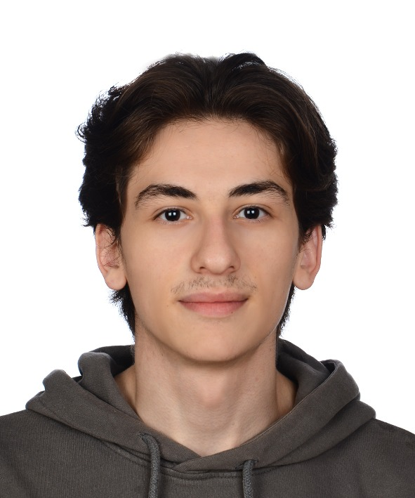

Hüseyin Aydın
Hakkımda
Ben Hüseyin Aydın. Sakarya Üniversitesi Bilgisayar Mühendisliği öğrencisiyim. Siber güvenliğe olan merakımdan dolayı üniversitemizin Siber Güvenlik Topluluğu olan SaüSiber’e katıldım ve yönetim ekibine katıldım.
Futbol oynamayı ve izlemeyi çok severim. Genellikle de haftada bir halı saha maçı yaparım. Uzun zamandır sıkıntılar çeken üzgün bir Fenerbahçe taraftarıyım.
Siber güvenlikle ilgili etkinliklere katılmaya çalışırım. Bu sene bu güzel etkinliklerden birini SaüSiber ekibi olarak RaConf’24 etkinliğini gerçekleştirdik. Bizler için çok eğlenceli ve bir o kadar da eğitici oldu.